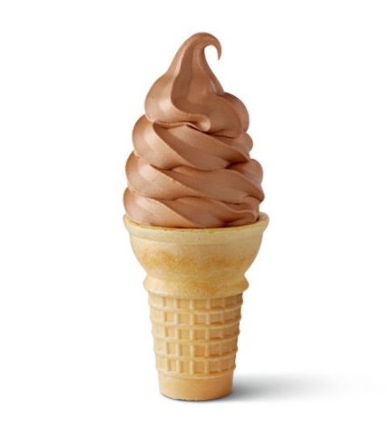
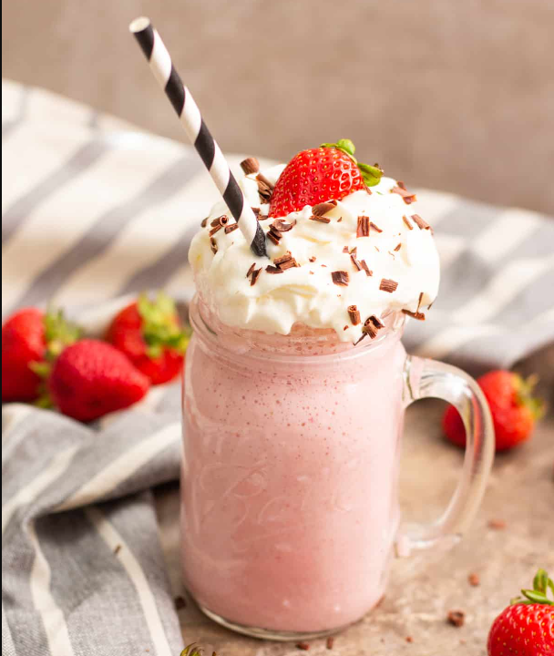
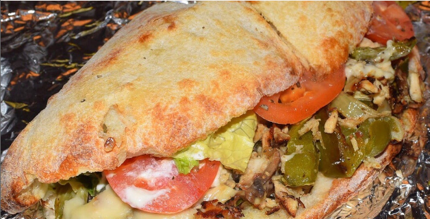
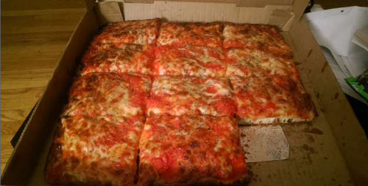
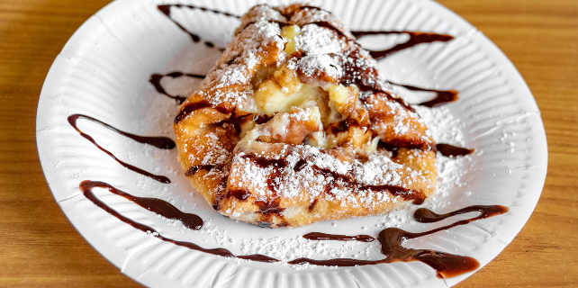

Welcome to the Nearby Restaurant Recommendations Blog!
Are you looking for place near campus to grab a bite? Then
look
no further than this blog post! We will give you
recommendations
on foods and drinks that you should try out if you're on
campus.
From hot dogs to milkshakes, pizzas, and hot subs, we got
you
covered. We will add more recommendations later as more
students
try out different things, but for now, we will give 3 foods
to try
out.
If you want to delicious and cheap fast food, go to Yum
Yums!
All The Way - Mustard, Chili, Slaw,
Onion Hot Dog $1.80 You can't go wrong
with the classic all the
way hot dog that has mustard, chili, coleslaw, and
onions.

Small Chocolate Ice Cream Cone
$2.75
A "small" ice crean cone topped with what looks like
3 scoops of
chocolate ice cream.

Strawberry Milkshake
$3.90
A strawberry milkshake that is prepared in-house by
the staff
using their homemade strawberry ice cream.
If you want to try pizzas and other Italian dishes, check out
Slices Pizzaby Tony!
I tried them out for the first time during my sophomore year
and have always gone
back.

Chicken Philly Sub
$14.99
My personal favorite dish is their Chicken Philly
Sub,
which comes with
Chicken, American cheese, mushrooms, onions & green
peppers,
lettuce, tomatoes, mayonnaise.

Sicilian Marinara Pizza
$23.98
For pizza, you can't go wrong with any option, but I
recommend
their Silian Marinara Pizza that serves more that
one
person.
You can add any topping you want on it.

Zeppole
$4.99
For dessert, I highly suggest trying the delicious
zeppole.
For classic southern style chicken between two buns, come to
Chick-fil-A! They are famours for
their chicken sandwiches.
Chicken, Egg, & Cheese Buscuit
$3.50
Try out the chicken egg and cheese buscuit for
Breakfast
if you're looking for a change from the typical
bacon egg and cheese buscuit.
Chick-fil-A Deluxe Sandwich
$5.99
A boneless chicken breast paired with cheese, lettuce, and a tomato.
Chick-fil-A Grilled Chicken
Club Sandwich
$5.79
A boneless chicken breast,
served on a toasted multigrain brioche bun
with cheese, applewood smoked bacon,
green leaf lettuce and tomato. This one goes well
with Honey Roasted barbecue Sauce.